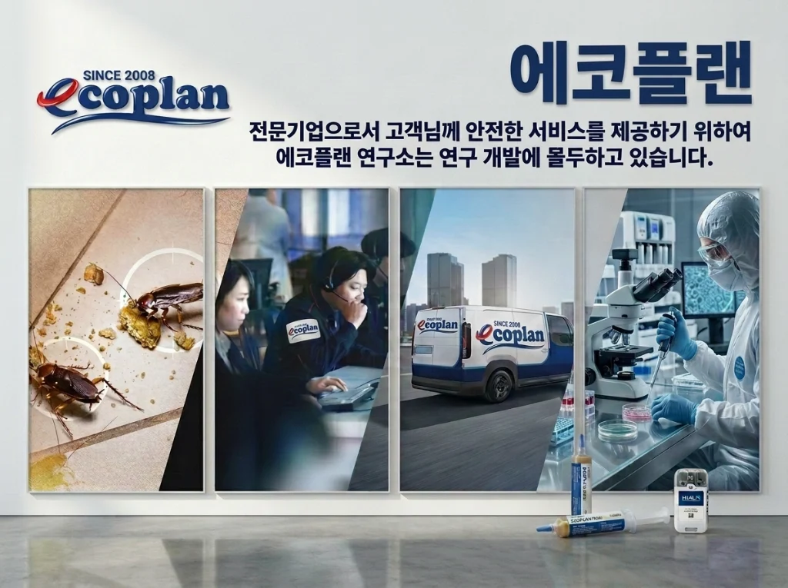

더 나은 일상은, 건강한 공간에서.
에코플랜은 방역소독과 해충방제를 통해 고객의 공간을 과학적으로 관리합니다. 눈앞의 문제와 발생 환경을 함께 살피고, 현장에 필요한 해결 방법을 찾습니다.

방제전문가가 직접 방문하고,
기록을 바탕으로 관리합니다.
법정교육은 물론 별도의 전문가 교육프로그램을 수료하였으며, 지속적으로 세미나·관련 전시회 등에 참석하여 기술을 업데이트합니다. 현장에서 숙련된 인력이 보수교육을 통해 최신 서비스를 제공합니다.
교육 과정과 수료 범위는 담당 인력별로 다를 수 있습니다. 관련 확인 자료는 상담 시 요청해주세요.
에코플랜 전문가 교육·기술 검증 6대 체계
현장 진단의 정확성과 약제 적용의 안전성을 높이기 위해 운영하는 기술 관리 기준입니다.
| 검증 영역 | 운영 내용 및 기술 기준 | 고객 현장 제공 증빙 (요청·계약 시) |
|---|---|---|
| 01. 법정·전문 자격 교육 | 감염병예방법 법정 소독교육, 위해생물방제사, 방제전문가 과정, 모기 종 동정·유충관리 전문 과정 수료 | 교육 수료 확인 안내 및 담당 컨설턴트 배정 |
| 02. 3W 원인 진단 프로토콜 | 해충 유인요인(Why)·침입경로(Where)·활동주기(When) 및 1~3단계 서식 밀도 표준 조사표 운영 | 사전 환경진단 결과 및 구역별 방제 계획 안내 |
| 03. 환경부 허가 약제 로테이션 | 피레스로이드·네오니코티노이드·CS캡슐 교차 적용 및 독먹이 당분 기피(Bait Aversion) 기간별 로테이션 | 사용 약제 목록, 환경부 승인 사항, 물질안전보건자료(MSDS) |
| 04. R&D 해충 동정 · 이물분석 | 실체현미경 해충 종 동정, 카탈라제(Catalase) 효소 반응 실험, 공정 재현실험, 제3자 기관 유전자 분석 연계 | 이물확인보고서 및 제3자 기관 분석 의뢰 협의 |
| 05. 비래해충 포충기 파장 설계 | 스마트캐치(SMART CATCH) UV LED·BL램프 라인업 공간 조도·동선별 위치 선정 및 포획지 모니터링 | 포충기 포획 해충 추이 기록 및 소모품 교체 안내 |
| 06. 지속 보수교육 · 학술 교류 | 연 2회 이상 국내외 방제 세미나·전시회 참가 및 신종·저항성 해충 현장 사례 공유 보수교육 | 업종별 개정 위생기준(HACCP·GMP 등) 반영 점검 |
에코플랜 공식 기업 정보 및 검증 채널
| 상호 (법인명) | 주식회사 한국에코플랜 |
|---|---|
| 브랜드명 | 에코플랜 · EcoPlan |
| 대표자 | 김영태 |
| 사업자등록번호 | 194-87-02717 |
| 본사 주소 | 서울특별시 강서구 양천로 489, 상가동 지하층 18호, 19호 (가양동, 가양우성아파트) |
| 고객상담센터 | 1688-4587 |
| 공식 이메일 | eco@ecoplan.co.kr |
| 공식 서비스 권역 | 서울·경기·인천 수도권 방문 진단 및 전국 프랜차이즈·제조시설 정기관리 상담 |
| 공식 외부 채널 | 대표 도메인(ecoplan.co.kr) · 스마트캐치 네이버 스마트스토어(smartstore.naver.com/smartcatch) · 카카오톡 상담채널 |
표창장·작업사진·관리기록 확인 안내
공개 가능한 현장 작업 자료와 증빙을 통해 서비스 내용을 확인할 수 있습니다.
표창장 · 교육 수료 증빙
표창명, 발급기관, 발급일 및 법정·전문 교육 수료 확인 자료는 상담 시 안내받으실 수 있습니다.
현장 작업사진
구역별 진단, 트랩 설치, 약제·소독 처리 등 작업사진은 고객 보호 범위를 준수하여 관리합니다.
맞춤 관리 기록
방문 일자, 점검 위치, 적용 내용, 개선 제안 사항을 체계적으로 기록하여 다음 관리에 반영합니다.
회사소개·전문가 자격 자주 묻는 질문
에코플랜의 현장 방문 인력은 어떤 교육과 자격을 갖추고 있나요?
감염병예방법에 따른 법정 소독교육 이수는 물론, 사내외 방제전문가 교육과정, 위해생물방제사 과정, 모기 종 동정 및 유충관리 전문 교육을 수료한 기술 인력이 현장을 방문합니다. 또한 연 2회 이상 외부 학술 세미나·전시회 참석과 정기 보수교육을 통해 최신 약제 저항성 및 IPM 기법을 업데이트합니다.
기업 고객이나 시설 관리자가 에코플랜의 법정 서류나 약제 증빙을 요청할 수 있나요?
네, 사업자등록증, 소독업 신고 관련 확인 서류, 현장 적용 약제의 환경부 승인·허가 자료 및 물질안전보건자료(MSDS), 법정·전문 교육 수료 증빙은 계약 및 상담 시 요청하시면 제공 범위에 맞춰 안내해 드립니다.
• 작성·검토 주체: 주식회사 한국에코플랜 기술연구소 · 위해생물방제사 기술지원팀 (대표 김영태 · 고객센터 1688-4587)
• 최초 구성일: | 최종 개정·검수일:
• 참고 법령 및 1차 공공 기준: 환경부 초록누리(살생물제 승인기준) ↗ · 질병관리청 감염병 매개체 종합방제(IPM) 지침 ↗ · 한국식품안전관리인증원(HACCP 방충·방서 기준) ↗ · 감염병예방법 소독기준 ↗
• 공식 채널 확인: 에코플랜 공식 도메인(ecoplan.co.kr) ↗ · 스마트캐치 공식 네이버 스마트스토어 ↗ · 현장 맞춤 상담 신청